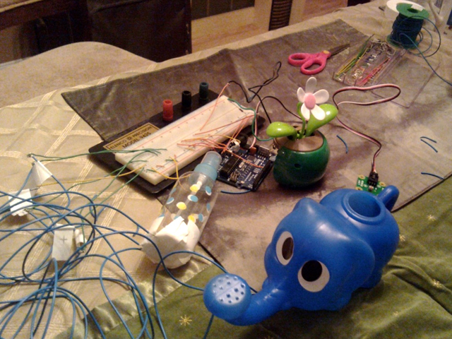
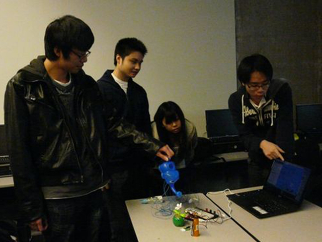
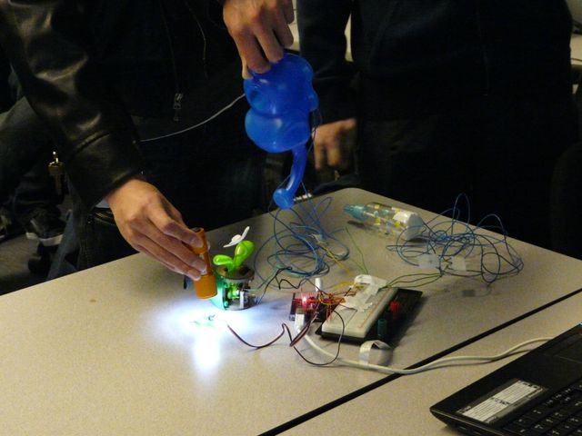

Henry Lo
Interactive Flower Game
Design Concept:
The game consists of a physical flower ornament powered by an electromagnet, which will move in response to the user's input. Users will have a spray can, acting as a can of pesticide, to get rid of pests; a watering can to water the flower; and a flashlight to give sunlight to the flower. Using these accessories (inputs) implanted with sensors, the player aims to increase the flower's "happiness rating" (speed of movement) to maximum.
I was responsible for the game logic and meshing the backend code with the graphics and arduino.
Tools Used:
- Ardunio (Diecimila board and IDE)
- Processing IDE
- Accelerometers
- Light sensor
- Breadboard
- Wiring
More Photos:


